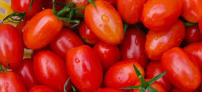
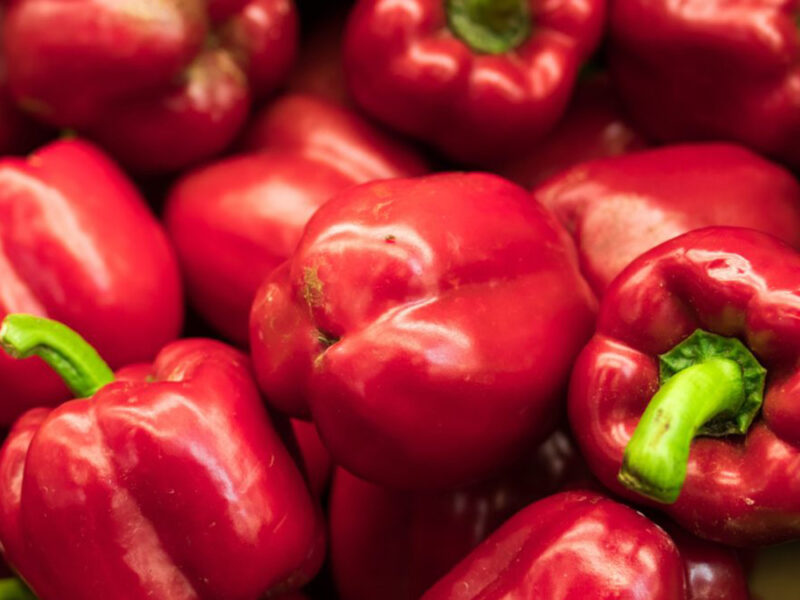
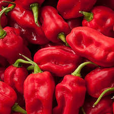
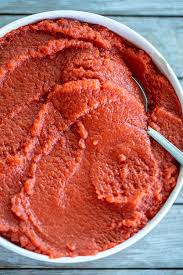
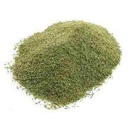
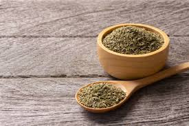
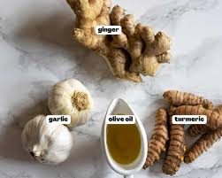
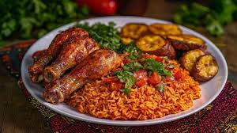
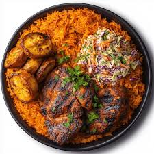
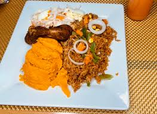

Nigerian Party Jollof Rice
This very smoky Nigerian Party Jollof Rice, adapted from Diary of a Kitchen's Lover
famous recipe, is a true National treasure. Cooked in a rich tomato-pepper blend, infused with aromatic spices,
and finished with a signature smoky flavour, this vibrant dish captures the heart of Nigerian celebrations - rich,
delicious, and perfect alongside meats, fish, moimoi and plantains.
Recipe Information
Prep Time: 20 minutes
Cooking Time: 50 minutes
Number of Servings: 10
Difficulty Level: Intermediate
Ingredients
 4 cups parboiled long-grain rice
4 cups parboiled long-grain rice-  6 large tomatoes
-  4 red bell peppers
- 2 medium onions (1 sliced, 1 blended)
-  2–3 scotch bonnet peppers
-  3 tablespoons tomato paste
- 1/2 cup vegetable oil
-  2 teaspoons curry powder
-  2 teaspoons thyme
- 2 bay leaves
- 4 cups meat stock
- Salt and black pepper to taste
-  Optional: Olive oil, Ginger, Garlic , Turmeric
Instructions
- Cook pepper mixture(tomatoes, red bell pepers, scotch bonnet,onion) in olive oil before blending into a smooth paste
- In a large pot, heat the vegetable oil over medium heat. Add the sliced onion, (ginger and garlic) and sauté until translucent.
- Add the tomato-paste and fry for about 10-15 minutes until oil seperates.
- Stir in the pepper mixture, curry powder, thyme, and bay leaves. Cook for another 5 minutes.
- Add the parboiled rice to the pot and stir well to coat with the sauce.
- Pour in the meat stock and add water if necesssary and bring to a boil.
- Season to desired, taking into consideration of the stock seasoning
- Reduce heat to low, cover tightly, and let it simmer for about 30-40 minutes or until the rice is cooked through.
- For the signature smoky taste, let the bottom slightly burn (don’t stir for the last few minutes).
- Once cooked, fluff the rice with a spoon and let it sit covered for an additional 10 minutes before serving.
Tips
*Use a wide-bottomed pot for even cooking. (Stainless steel or cast iron works best)
*Cover the pot with foil or a tight-fitting lid reducing the heat to low
*Do not rush the frying stage and cook
*Cooking of the pepper mixture in olive oil before blending is key to achieving that deep, rich flavor
*Goat meat stock is preferable for it is more flavourful
Serving Suggestions
Serve the Jollof Rice with grilled chicken, or peppered beef, and
fried plantains,or pair it with a side of moi moi (steamed bean pudding) or
coleslaw for a complete Nigerian feast. Garnish with fresh parsley or sliced onions for added flavor and presentation.
 

Nutrition Facts (per serving)
| Nutrient |
Amount |
| Calories |
350 kcal |
| Carbohydrates |
60g |
| Protein |
7g |
| Fat |
10g |